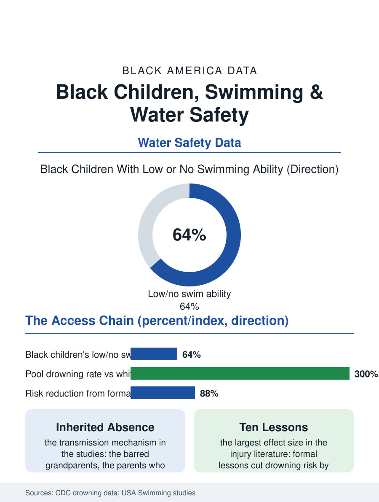

Black Education
The Locked Gate: Black Children, Swimming, and Survival
Black children drown at multiples of the white rate because the lesson was segregated two generations ago; ten lessons cut the risk nearly ninety percent. The water file.

Black children drown at rates several times the white rate in the swimming-age years, the widest such gap in the injury data, and the cause the research assigns is not the water but the lesson: swimming ability in America is inherited through access, and the access was segregated within living memory. The education file's most literal life skill is the subject of this article. This article reads the water safety file.
The Pool's History
The drowning data's shape is precise: the Centers for Disease Control's analyses find Black children and youth drowning in swimming pools at rates several multiples of white children's, the gap peaking in the preteen and teen years when independence reaches the water, while the bathtub and natural water patterns distribute differently. The mechanism is the skill distribution: the survey studies of swimming ability find Black children and adults reporting the lowest swim proficiency of any group, roughly two thirds of Black children with low or no swimming ability in the national studies, a deficit the researchers trace through the access chain with unusual completeness. The chain is the pool's history: the municipal pool era's segregation, the white flight from the integrated public pool to the private club and the backyard that drained the public system's constituency and budget, the pool closures that followed in the Black neighborhoods the system had excluded or grudgingly admitted, compressing into two generations a skills famine whose mechanism is simply that the grandparents were barred, the parents never learned, and the children inherit the fear and the absence together. The fear is the file's documented transmission medium: the parent who cannot swim keeps the child from the water and from the lesson with the same protective motion, and the programs that break the chain are the ones that teach the parent and the child in the same session, the family swim model the drowning prevention literature now standardizes.
The Lesson Economy
The instruction market reproduces the access map: the private lesson and the swim club's fees, the public pool's lesson rosters filled by the registration morning's queue, the school-based programs, the exception in the districts that kept them, reaching the students the market misses in the only venue that reliably assembles them. The intervention evidence is the file's hopeful core, because the effect is direct: formal swimming lessons in the studies associate with drowning risk reductions on the order of eighty-plus percent in the young cohorts, among the largest effect sizes in the injury prevention literature, and the targeted programs, the Y's and the parks departments' free lesson initiatives in the high-burden cities, the Black-led swim organizations that grew from the community's own alarm at the data, post participation and competency results that validate the model wherever the funding sustains it. The competitive swimming file rides on top: the elite pipeline's Black representation, from the learn-to-swim base through the club system's fees to the national team, has produced its landmark champions whose visibility the programs use as the recruitment poster, the Olympic medalist's foundation funding the lessons in the cities the data name, the pipeline's top feeding its base in the file's most satisfying circuit.
A Skill, Restored
The water safety file closes on the restoration the data describe as achievable within a generation: the skill is teachable in ten lessons, the infrastructure exists in the public pools that remain and the schools that assemble the children, and the programs' unit costs are trivial against the injury file's other entries, so that the drowning gap stands in the data as one of the purest measures of the access chain's operation, uncomplicated by any variable but history and price. The historical rhyme is exact and the file states it plainly: a people whose ancestors' relationship to American water began in the holds of ships and the terror of the rivers, who nonetheless produced the harbor pilots, the pearl divers, the beach communities of the Inkwell file, and the Navy's decorated swimmers, was separated from its own aquatic tradition by two generations of the locked pool gate. The lesson programs are the key returning to the lock. The surveillance counts the drownings each summer, and the map of them is the map of the unlearned lesson, city by city, in a pattern so legible that the file's last word is the prevention field's own verdict: this gap, of all the gaps in this atlas, is the one whose mechanism is fully known, whose remedy is fully priced, and whose persistence is therefore the least forgivable, a summer at a time.
More in Black Education
Black Educational Attainment: High School Parity, the College Gap
About 89 percent of Black adults hold a high school diploma and one in four holds a bachelor's degree or higher — the attainment ladder, the college completion gap, and the generational trend.
Historically Black Colleges and Universities: Enrollment and Degrees
More than 100 HBCUs enroll roughly 290,000 students and award about one in six Black bachelor's degrees — an outsized share from a small sector. The federal education data.
Black College Enrollment: 2.4 Million Students
About 2.4 million Black students are enrolled in American colleges — nearly two-thirds of them women. The NCES enrollment data by sector, level, and trend.
Source: Centers for Disease Control and Prevention, drowning surveillance; USA Swimming Foundation and University of Memphis swimming ability studies.